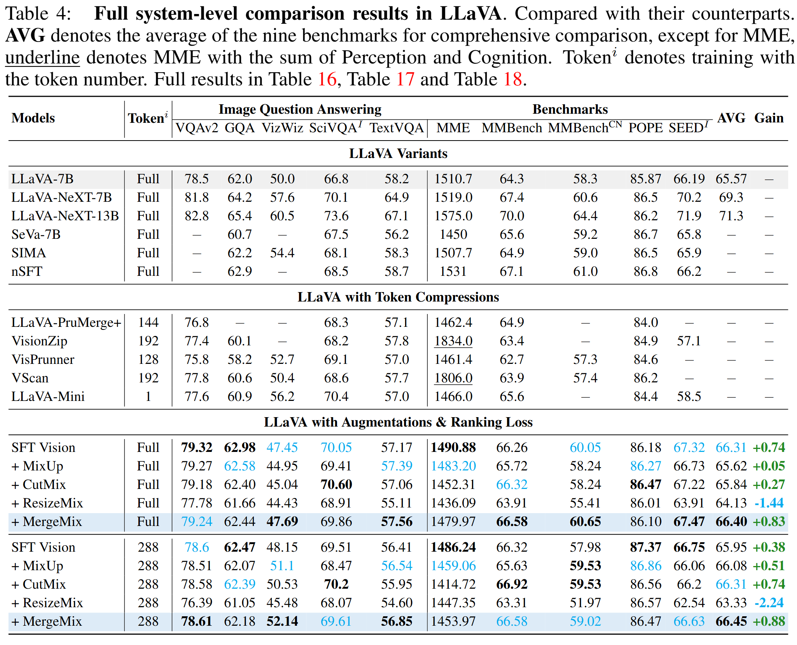
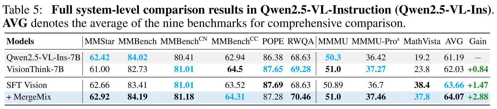
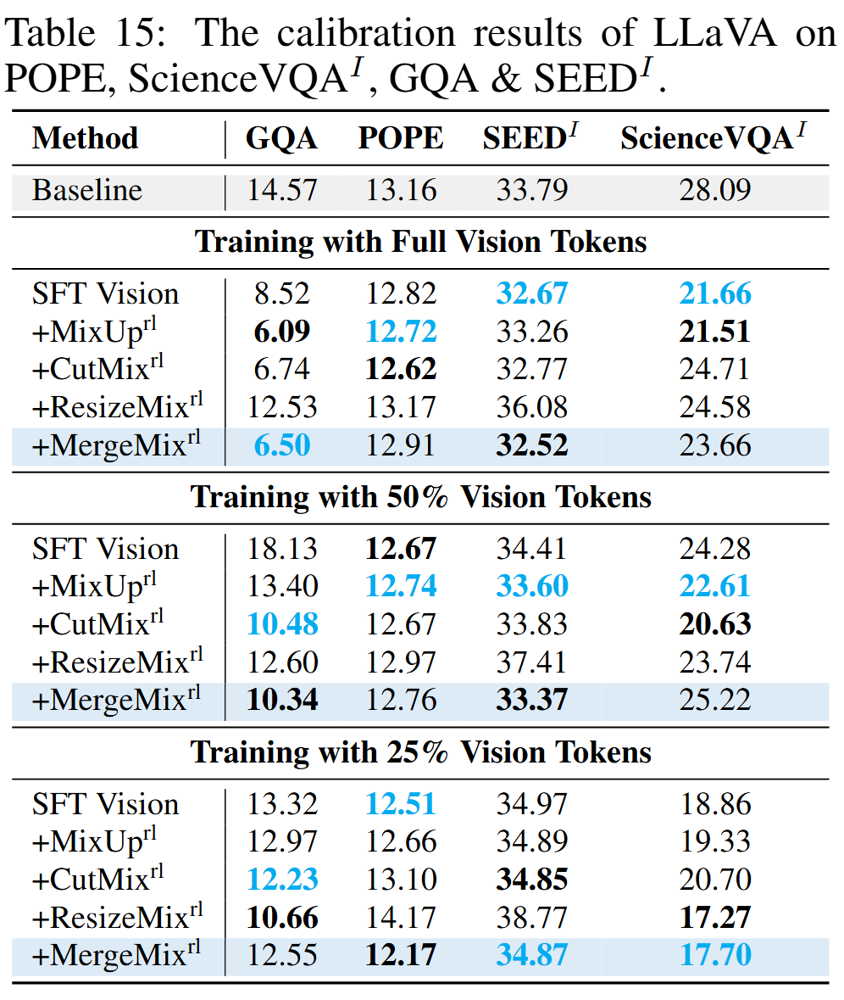

Results of MLLM Benchmark


Results of Calibration on MLLMs

More Results of MLLM Benchmark

Different token merge ratios of inference comparison results with augmentations. AVG: The average of the nine benchmarks for comprehensive comparison, except for MME.